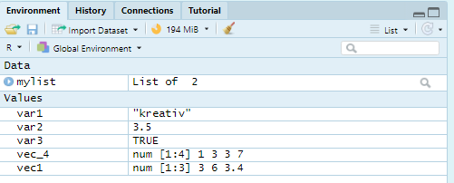

4 Datenstruktur
| Thema | Inhalte |
|---|---|
| RMarkdown | Titel, Chunks, knitten |
| Hilfe | help-Fenster, ?, #was passiert hier |
| Werte, Vektoren & Listen | chr, num, log, c(), list(), typeof(), coercion, Abruf von Elementen, list(list()) |
| Workspace | rm(), Besen |
| Berechnungen | mit Values, Vektoren, Funktionen, z-Standardisierung |
| Matrizen | matrix(), Indizierung |
| tidy Daten | Zeilen: Beobachtungen, Spalten: Variablen |
| tidyverse | Installation und library (package) |
| data.frame & tibble | Unterschiede, as.data.frame(), as_tibble(), $, [], Zugriff auf Elemente, Reihennamen, Faktoren |
| Daten laden & speichern | Import per klick, read./_, sep=, dec=, .xlsx, .svs, write_csv() |
| Daten anschauen | View(), head(), str(), count() |
4.1 RMarkdown
Das R Markdown Skript ist ein besonderes Dateiformat für R Skripte. Es enthält Fließtext und eingebetteten R Code:

Knittet man dies Skript mit dem Wollknäul Button (5.) in der oberen Leiste, integriert es den ausgeführten Code mit dem Fließtext und druckt ein übersichtliches Dokument (html, pdf, txt oder doc). Das ist praktisch um z.B. Auswertungsergebnisse zu präsentieren.
- Im Header werden Titel und Dokumententyp für das Ausgabe-Dokument festgelegt
- Die Code Blöcke (
Chunks) sind mit je drei rückwärts gestellten Hochkommata (Backticks) am Anfang und Ende des Chunks eingerahmt. Werden sie vom R Markdown Skript als solche erkannt, wird auch die Hintergrundfarbe automatisch abgeändert. Im ersten Chunk solltenglobale Chunk Optionen festgelegt, alle notwendigenPackages geladenund dieDaten eingelesenwerden. - Den Fließtext kann man mit Überschriften (
#) und Unterüberschriften (##) strukturieren, im Code kennzeichnet#Kommentare - Zu Beginn eines Chunks muss man innerhalb einer geschwungenen Klammer spezifizieren(```{…}):
Es ist möglich Code von anderen Programmiersprachen (z.B. Python oder TeX) einzubetten, standard ist
r(optional) Nach einem Leerzeichen: Einzigartiger Chunk-Name
(optional) Nach einem Komma: Befehle, um die Ausgabe des Chunks in das neue Dokument zu steuern:
include = FALSEWeder Code noch Ergebnis erscheinenecho = FALSENur das Code-Ergebnis erscheintmessage = FALSENachrichten zum Code erscheinen nichtwarning = FALSEWarnungenzum Code erscheinen nichtfig.cap = "..."Hiermit lassen sich Grafiken beschriften
4.2 Hilfe
Sie merken, dass die Befehle und Funktionen zum Teil sehr spezifisch und Sie sich kaum alles behalten können. Am wichtigsten ist die Reihenfolge und Vollständigkeit der Zeichen: vergessen Sie ein Komma, ein Backtick oder eine Klammer zu, dann kann R den Code schon nicht interpretieren. Zum Glück erkennt R Studio das oft und weist einen darauf während des
Codens mit einem roten x neben der Zeilennummer hin. Andernfalls dürfen Sie versuchen, die Fehlermeldung beim Ausführen zu verstehen.
Wenn Sie den Namen einer Funktion oder eines Packages nicht direkt erinnern, können Sie den Anfang des Namens im Chunk oder in der Console eingeben, RStudio bietet einem nach einem kurzen Moment eine Liste möglicher Optionen an, aus der Sie wählen können. Haben Sie eine Funktion gewählt, können sie die Tab-Taste drücken und es werden die verschiedenen Funktionsargumente angezeigt, um die Funktion zu spezifizieren, was oft sehr hilfreich ist. Möchten Sie wissen, was eine
Funktion macht oder in welcher Reihenfolge die Funktionsargumente eingegeben werden, können Sie ?FUN in die Console eintippen, wobei FUN Platzhalter für den Funktionsnamen ist. Alternativ können Sie im Help-tab unten rechts suchen. Die Dokumentation ist oft sehr ausführlich. Die Möglichkeit einschlägige Suchmaschinen im Internet zu verwenden ist fast zu trivial, um sie hier aufzuführen, oft werden Sie dabei auf StackOverflow weitergeleitet. Auf Englisch gestellte Fragen
oder Probleme führen zu besseren Treffern. Noch trivialer ist es, im Skript des Kurses oder im eigenen Code nachzuschauen. Falls Sie gründlich nachlesen möchten, gibt es auch ganze Bücher, die einem eine Einführung in R geben: z.B. R Cookbook oder R for Data Science.
4.3 Werte & Vektoren
Datenformate in R sind von einfach zu komplex: Value, Vektor, matrix, (array), data.frame,tibble und list. Die kleinste Objekteinheit in R ist ein Value. Es gibt unterschiedliche Typen von Values:
- Text, bzw. Charakter (
chr), manchmal auch String genannt, - (komplexe Zahlen,
cmplx) - Nummer (
num), bzw.double - (ganze Zahlen, integer
intgenannt) - logische Werte (
logi), manchmal auch Boolean genannt - fehlende Werte (
NA),Not Available
Sie weisen einem Objektnamen einen Wert per <- zu (Shortkey:ALT&-), der Datentyp des Values wird automatisch Rkannt.
Mit der Funktion typeof() können sie sich den Datentypen anzeigen lassen.
Vektoren reihen Werten desselben Datentyps auf c(Wert1, Wert2, ...):
Fassen Sie Werte von verschiedenen Typen zu einem Vektor zussammen, werden beide Werte zum Typen mit der kleineren Typenzahl umgewandelt (coercion).
## [1] "kreativ" "3.5"3.5 wird in "" ausgegeben, die Nummer wurde zu Text.
4.3.1 Coercion (Umwandlung von Typen)
Sie können den Datentypen auch per Funktion ändern, z.B. as.character(), as.double():
## [1] "1" "TRUE" "abc" "4.1627"as.double(c(2, TRUE, "abc", 4.1627)) # Verändert die Werte zum Typ double, geht es nicht, erscheinen NAs## Warning: NAs introduced by coercion## [1] 2.0000 NA NA 4.1627Coercion gibt es auch in Matrizen, Arrays (Mehrdimensionale Matrizen) und in Spaltenvektoren von Datensätzen (data.frames und tibbles). Nur Listen können verschiedene Datentypen und Elemente enthalten list(Element1, Element2, ...). Das geht soweit, dass Listen selbst Listen enthalten können.
4.3.2 Aufruf einzelner Elemente per Index:
Um auf Elemente zuzugreifen, können Sie deren Indexnummer verwenden:
## [1] 3Das geht sogar in verschachtelten Listen:
mylist <- list(list(1,"a"),c(2,3)) # Definiert eine Liste aus Liste & Vector, die je aus 2 Elementen bestehen
mylist[[1]][2] # Ruft Element 1 der äußeren Liste: (1,"a"), und davon Element 2 ab: "a"## [[1]]
## [1] "a"Ich habe jetzt mehrere Variablen (Values, Vektoren, Listen) definiert, sie sind in meinem RStudio im Environment-tab oben rechts aufgetaucht.
4.4 Der Workspace
Rechts oben im Fenster ist das Environment-tab. Hier sieht man alle im globale Workspace definierten Objekte (Datenstrukturen: Werte, Vektoren, Matrizen, Arrays, Listen, data.frames, tibbles; und Funktionen) aufgelistet:

Per Doppelklick können Sie die Objekte jeweils einzeln oben links im extra Fenster (Datenansicht-tab ) anschauen. rm(Objektname) ist die Funktion zum Entfernen einzelner Objekte aus dem globalen Workspace. Das Besensymbol im Environment-tab oben rechts fegt den globalen Workspace leer. Es ist zu beachten, dass R Markdown beim knitten nicht auf den globalen Workspace zugreift, sondern einen eigenen Workspace aus dem Code in den Chunks erstellt. Beim Ausführen
einzelner Chunks per Markieren und STRG/CTRL&Enter oder grüner Pfeil rechts wird jedoch auf den globalen Workspace
zugegriffen. Beim Schließen von RStudio werden Sie gefragt, ob Sie den globalen Workspace in die .RData als img speichern lassen, dann stehen die Objekte in der nächsten Sitzung wieder zur Verfügung, solange Sie dieselbe Projektdatei öffnen. Offene Skipte und offene Datenansicht-tabs werden beim Schließen ebenfalls mit der Projektdatei assoziiert. Geladene Packages gehen leider verloren, diese müssen Sie jedes Mal beim Starten von RStudio neu laden: library(Packagename). Deshalb ist es Konvention am Anfang jedes Skriptes erstmal die Packages zu laden. Haben Sie Objekte im Workspace gespeichert, können Sie deren
Namen verwenden, um sich auf diese zu beziehen und z.B. weitere Berechnungen vorzunehmen.
4.5 Einfache Berechnungen
4.5.1 Rechnen mit Values
x <- 5 # definiert den Wert der Variable x
y <- 5 # definiert den Wert der Variable x
x + y # Summe von x und y
x*y # Produkt von x und y
sqrt(x) # Wurzel aus x
x**(1/2) # x hoch 0.5Möchten Sie das Ergebnis speichern, müssen Sie dem berechneten Wert einen Namen zuweisen:
4.5.2 Rechnen mit Vektoren
Operationen können häufig vektorisiert, d.h. auf alle Objekte einens Vektors angewendet werden:
e <- vec_4 * 5 # multipliziert alle Elemente des Vekors mit 5 und speichert das Ergebnis unter dem Namen eEs gibt eine ganze Reihe vorgefertigter Funktionen, um mit Vektoren zu rechnen:
4.5.3 Übersicht Berechnungsfunktionen
Folgende Funktionen können Sie auf num-Vektoren und Matrizen anwenden, je nach Funktion auch auf chr Vektoren oder Datensätze, wobei diese sich dann meist nur auf die Einträge in der oberen Ebene, z.B. auf die Anzahl der Spalten und nicht auf die Spalteneinträge beziehen.
| Funktion | Bedeutung | Funktion | Bedeutung |
|---|---|---|---|
| min(x) | Minimum | mean(x) | Mittelwert |
| max(x) | Maximum | median(x) | Median |
| range(x) | Range | var(x) | Varianz |
| sort(x) | sortiert x | sd(x) | Sta ndardabweichung |
| sum(x) | Summe aller Elemente | quantile(x) | Quantile von x |
| cor(x,y) | Korrelation von x und y | length() | Länge von x |
4.5.4 Beispiel einer z-Standardisierung eines Vektors mit 3 Einträgen
## [1] 8## [1] 4## [1] 0 -1 14.6 Matrizen
Matrizen sind 2D Datenstrukturen, sie bestehenaus Vektoren gleicher Länge und enthalten einen Datentyp. Mit dem
Befehl matrix() können sie erstellt werden:
mat <- matrix(NaN, nrow=4, ncol=4) # Eine Matrix mat mit 4 Reihen, 4 Spalten und leeren Einträgen wird erstellt
# NaN (Not a Number) ist zwar ein double, aber rechnen kann man damit nicht
mat## [,1] [,2] [,3] [,4]
## [1,] NaN NaN NaN NaN
## [2,] NaN NaN NaN NaN
## [3,] NaN NaN NaN NaN
## [4,] NaN NaN NaN NaNIch habe eine 4x4 Matrix erstellt, die mit NaNs gefüllt ist. Hätte ich diverse Datentypen zugeordnet, wären diese zum niedrigeren coerced worden. Matrizen können mit matrixname[Zeile,Spalte] manipuliert werden. Beispiel:
mat[,1] <- vec_4 # Weil Spalte 1. von mat und vec_4 dieselbe Länge haben, kann ich Spalte 1 neu zuweisen.
mat # Dadurch, dass der Eintrag für die Zeilennummer leer ist, beziehe ich mich auf alle Zeilen.## [,1] [,2] [,3] [,4]
## [1,] 1 NaN NaN NaN
## [2,] 3 NaN NaN NaN
## [3,] 3 NaN NaN NaN
## [4,] 7 NaN NaN NaNmat[,2] <- 8 # Wird einem Bereich ein einzelner Wert zugeordnet, wird dieser vervielfacht (wie oben bei NaN)
mat## [,1] [,2] [,3] [,4]
## [1,] 1 8 NaN NaN
## [2,] 3 8 NaN NaN
## [3,] 3 8 NaN NaN
## [4,] 7 8 NaN NaNmat[,3] <- c(FALSE, TRUE) # Wird eine ganzzahlige Teilmenge (2 von 4) zugewiesen, wird diese vervielfacht
mat # Anm.: das nennt sich recyclen,## [,1] [,2] [,3] [,4]
## [1,] 1 8 0 NaN
## [2,] 3 8 1 NaN
## [3,] 3 8 0 NaN
## [4,] 7 8 1 NaNCoercion: TRUE wurde zu 1 und FALSE wurde zu 0. Wenn man nun eine bestimmte Spalte oder Zeile sehen möchte, kann man dies über die Indizierung tun, hierbei kann man sich beliebig austoben.
## [1] 1 3 3 7## [1] 1Hier wird es turbulent:
## [,1] [,2] [,3] [,4]
## [1,] 1 8 0 NaN
## [2,] 3 8 0 NaN## [,1] [,2] [,3]
## [1,] 8 1 NaN
## [2,] 8 0 NaN
## [3,] 8 1 NaNDa ich jetzt Bereiche der Matrix auswählen kann, lohnt es sich Berechnungen vorzunehmen
## [1] 0 11 0 15Es sind immer noch nicht angegebene Nummernwerte in der Matrix, solange ich mich beim Berechnen auf Bereiche der Matrix beschränke, die vergebene numerische Werte haben, gibt es kein Problem, ansonsten schon:
## [1] 1 8 0 NaN## [1] NaNDie Summe kann nicht berechnet werden. Zum Auslassen der NaNs wird das Funktionsargument na.rm=TRUE verwendet:
## [1] 9## [1] 4Nun, da wir mit dem Rechnen in Matrizen vertraut sind möchte ich die letzte Spalte mit Einträgen füllen:
## [1] "double"mat_sav <- mat # in weiser Voraussicht speichere ich die bisherige Matrix unter anderem Namen
mat[,4] <- c("coercion","kann","nervig","sein") # weise Spalte 4 einen Vektor mit chr Einträgen zu
mat ## [,1] [,2] [,3] [,4]
## [1,] "1" "8" "0" "coercion"
## [2,] "3" "8" "1" "kann"
## [3,] "3" "8" "0" "nervig"
## [4,] "7" "8" "1" "sein"## [1] "character"Konnte ich eben noch den Mittelwert einer Spalte bilden, so geht das jetzt nicht mehr, da alle Einträge der Matrix zu chr coerced wurden. In einem typischen Datensatz sind aber Variablen verschiedener Typen (num und chr) enthalten. Dieses Problem ließe sich mit Listen lösen, welche aber unübersichtlich sind. Datensätze bestehen manchmal aus unüberschaubar vielen Einträgen und deshalb müssen sie übersichtlich strukturiert sein.
4.7 tidy Daten
Es gibt eine Konvention dafür, wie man Datensätze, die mehreren Beobachtungseinheiten (Fällen) verschiedene Parameter (Variablen) zuordnet. Wichtig für die eigene strukturierte Arbeit ist in erster Linie Konsistenz, z.B. dass Sie bei Variablennamen aus mehreren Wörtern immer den Unterstrich als Trennzeichen verwenden. Es hat sich als überlegen für die Auswertung von Daten herausgestellt, Fälle in Zeilen und Variablen in Spalten einzuordnen, dieses Prinzip dürfte Einigen schon von SPSS bekannt sein.
| Variable1 | Variable2 | Was ist ‘tidy’ data? | |
|---|---|---|---|
| Fall1 | Wert11 | Wert12 | Eine Zeile pro Beobachtung |
| Fall2 | Wert21 | Wert22 | Eine Spalte pro Variable |
| Fall3 | Wert31 | Wert32 | Eine Tabelle pro Untersuchung |
| Fall4 | Wert41 | Wert42 | eindeutige Namen |
| Fall5 | Wert51 | Wert52 | Konsistenz |
| Fall6 | Wert61 | Wert62 | … |
Es gibt noch weitere Regeln für konsistentes und ordentliches Arbeiten in R und mit Datensätzen im Allgemeinen, z.B. dass man keine Farbcodierungen verwenden sollte. Vorerst genügt es, wenn Sie sich an die Basics hier halten. Diese Art Daten zu strukturieren lässt sich im data.frame und noch besser im tibble umsetzen: Beides sind Tabellen mit Spaltenvektoren, die jeweils verschiedene Datentypen enthalten können. Deswegen stellen beide das bevorzugte und für unsere Zwecke wichtigste Datenformat dar.
4.7.1 tidyverse
Bevor wir uns dem schönsten Datenformat, den tibbles widmen, müssen wir das entsprechende Package einmalig in der Console installieren. Ich habe den Code auskommentiert, weil das Package bei mir bereits installiert ist:
Das Package tidyverse enthält eine Reihe nützlicher Packages, die eine saubere Datenverarbeitung zum Ziel haben. Packages müssen bei jeder Sitzung neu aktiviert bzw. angehängt werden. Für uns relevante Packages im tidyverse sind tibble, readr, stringr, dplyr, purr und ggplot2.
4.8 data.frames (df) und tibbles (tib)
Es gibt mehr Gemeinsamkeiten als Unterschiede zwischen beiden Datenformaten. Beides sind Tabellen mit Spaltenvektoren (Variablen), die je verschiedene Datentypen enthalten können. Hier zunächst die Übersicht über die Funktionen zum Managen des Datensatzes:
| Funktion zum | data.frame() |
tibble() |
|---|---|---|
| Datenformat konvertieren | as.data.frame() |
as_tibble() |
| Definieren | data.frame(var1,…) | tibble(var1,…) |
| Aufrufen des Datensatzes | df | tib |
| Auswählen einer Variable | df$var | tib$var |
| Auswählen eines Bereiches | df[rowIdx,colIdx] | tib[rowIdx,colIdx] |
| Definieren neuer Variablen | df$var_neu <- c(…) | tib$var_neu <- c(…) |
| Reihennamen vergeben | row.names(df) <-c(“name1”,…) | relocate(tib,var) |
Sie können die beiden Datensatz-Formate einfach in das jeweils andere konvertieren. Die Definition geht per Formel data.frame() und die Aneinanderreihung der Spaltenvektoren. Es bietet sich an, dabei direkt Namen für die Spaltenvektoren zu vergeben. Für tibbles geht das analog mit der Formeltibble()
test_df <- data.frame("text"=mat[,4] , # Komma zwischen Spaltenvektoren
"ist_Verb"=mat_sav[,3]) # verwende die Spaltenvektoren aus den vorherigen Matrizen und weise Namen zu
test_df## text ist_Verb
## 1 coercion 0
## 2 kann 1
## 3 nervig 0
## 4 sein 1In Bezug auf weitere Funktionen des Packages tidyverse sind tibbles ein wenig praktischer. Große tibbles werden übersichtlicher angezeigt (nur die ersten 10 Zeilen) wenn man sie aufruft.
## # A tibble: 4 × 2
## text ist_Verb
## <chr> <dbl>
## 1 coercion 0
## 2 kann 1
## 3 nervig 0
## 4 sein 1Einzelne Spalten können ganz einfach aufgerufen werden, in dem man den $-Operator benutzt. Schreibt man diesen direkt hinter den Namen des Datensatzes, klappt automatisch eine Liste mit allen Spalten auf:
## [1] "coercion" "kann" "nervig" "sein"Es ist auch möglich, mehrere Zeilen und/oder Spalten auszugeben, dies funktioniert wie bei Matrizen per Indexnummer:
## # A tibble: 3 × 1
## text
## <chr>
## 1 kann
## 2 nervig
## 3 seinDie Adressierung einzelner Spalten und Zeilen ermöglicht dann zum Beispiel die Berechnung von Kennwerten nur für einzelnen Spalten. Z.B. kann man die Kosten für Konzertkarten im Jahr 2022 aufsummieren lassen:
tickets_2022 <- tibble("Artist"=c("Ed Sheeran", "Billy Ellish", "The Weeknd", "Dua Lipa", "Imagine Dragons"),
"Kosten"=c(79.32, 282, 116, 136, 68.71 ))
sum(tickets_2022$Kosten)## [1] 682.03Der $-Operator wird für fast alle höheren Datentypen verwendet, um auf diese Zuzugreifen. Dies gilt zum Beispiel auch für die meisten Outputs von Funktionen (t-Test, Anova, SEMs) und Listen, es müssen aber wie im tibble Namen für die Listeneinträge vergeben sein:
liist_of_things <- list(tibbi = test_tib, # erstellt eine Liste aus diversen Objekten in meinem Workspace
ticki = tickets_2022, # den Namen der Listeneinträge werden
geschwi = geschwister, # die Objekte aus dem Workspace zugeordnet
vari = var1)
liist_of_things$geschwi # per $-Operator und Name in der Liste wird der Eintrag gewählt## [1] 8 4 12## # A tibble: 5 × 2
## Artist Kosten
## <chr> <dbl>
## 1 Ed Sheeran 79.3
## 2 Billy Ellish 282
## 3 The Weeknd 116
## 4 Dua Lipa 136
## 5 Imagine Dragons 68.7Theoretisch könnte ich auch noch\$Artist hinzufügen, dann würde mir nur die erste Spalte des tibbles ausgegeben. Mir fällt auf, ich habe den Namen eine Künstlerin in tickets_2022 falsch geschrieben:
Sie können also nicht nur Elemente aus Datensätzen abrufen, sondern diese mit dem <- neu zuweisen. Man kann das $ auch verwenden um neue Spalten in die Datensätze einzufügen:
tickets_2022$Priorität <- c(2, 4, 3, 5, 1) # definiert eine neue Spalte im Datensatz
tickets_2022$Prioritaet <- tickets_2022$Priorität # besser ae statt ä in Variablennamen
tickets_2022 # nun gibt es eine Spalte zu viel## # A tibble: 5 × 4
## Artist Kosten Priorität Prioritaet
## <chr> <dbl> <dbl> <dbl>
## 1 Ed Sheeran 79.3 2 2
## 2 Billy Eilish 282 4 4
## 3 The Weeknd 116 3 3
## 4 Dua Lipa 136 5 5
## 5 Imagine Dragons 68.7 1 1Ein weitere Unterschied zwischen tibbles und data.frames ist, dass tibbles keine Reihennamen kennen. Das vereinfacht das Format. Möchten Sie trotzdem gerne Reihennamen vergeben, dann müssen Sie sich mit einer neuen Variable(z.B. Reihenname) behelfen, die Sie mit relocate(tib,var) an den Anfang des Datensatzes stellen.
4.8.1 Faktoren
Vektoren, die kategoriale Einträge enthalten können Sie mit factor() als Faktor zuweisen:
Gegut_vec <- c("m", "f", "d", "f", "f", "m", "f", "f", "f", "m","m", "f", "m", "f", "f", "m", "f", "f", "f", "m")
Gegut_fac <- factor(Gegut_vec) # macht Faktor aus kategorialem Vector und speichert unter Namen
Gegut_fac # ruft den Faktor auf:## [1] m f d f f m f f f m m f m f f m f f f m
## Levels: d f mEs werden die einzelnen Ausprägungen und die möglichen Ausprägungen als Levels ausgegeben. levels() gibt nur die möglichen Ausrägungen eines Faktors aus. Faktoren eignen sich oft besser als Vectoren zum Plotten und Rechnen, deswegen ist es nützlich kategoriale Spaltenvektoren im Datensatz zu Faktoren zu machen. Jetzt, wo Sie mit dem Management von Datensätzen vertraut sind wollen wir vorhandene Datensätze einlesen:
4.9 Einlesen und Speichern von Daten
Daten können in R Studio auf unterschiedliche Weise eingelesen werden. Ich habe dieses Bild zur Abwechslung für Ihre Augen erstellt.

Es gibt frei verfügbare Datensätze in Packages, z.B. einen Datensatz zu Pinguinen: palmerpenguins.
Horst AM, Hill AP, Gorman KB (2020). palmerpenguins: Palmer Archipelago (Antarctica) penguin data. R package version 0.1.0. https://allisonhorst.github.io/palmerpenguins/
Nach einmaliger Installation des Packages (install.packages("palmerpenguins") muss es geladen werden:
library(palmerpenguins) # jedes Mal beim Durchlaufen des Skripts. Ohne ""
pengu <- penguins # penguins ist zwar schon ein tibble, aber Namenszuweisung zum Laden in den WorkspaceIn der Regel werden Sie aber einen selbst erhobenen oder einen aus dem Internet heruntergeladenen Datensatz einlesen wollen. Mein Tipp ist, den Datensatz in das Working Directory zu speichern, dann finden Sie ihn schneller und er ist in der Nähe Ihrer Auswertung, noch eleganter ist es einen Unterordner namens data in den Ordner des Working Directories anzulegen, in den Sie alle Datensätze zu ihrem Projekt speichern können. Im File-tab unten rechts navigieren Sie zu der Datei mit dem Datensatz und dann klicken Sie diese zum Importieren des Datensatzes an (alternativ können Sie im Environment-tab über den Button Import Dataset einen Datensatz zum Importieren auf ihrem Computer suchen). In RStudio erscheint ein Fenster zum Importieren, unten rechts wird der automatisch der dem Dateiformat und unten links angegebenen Optionen entspricht, ggf. werden sogar benötigte Packages geladen. Um einen Datensatz per Code zu importieren sind Dateiformat, die Trennzeichen (sep) und die Dezimalzeichen (dec) besonders relevant. Das Standard-Dateiformat ist .csv, hier sind Kommata Trennzeichen (sep=",") und Punkte kennzeichnen Dezimalstellen (dec="."). Sie können die Funktionen read_cvs() oder read_delim() für dieses Dateiformat verwenden, letztere sollte Trenn- und Dezimalzeichen automatisch erkennen. Hier ist eine Übersicht zu den Einlesefunktionen in base R (also ohne zusätzlich geladene Packages) und im tidiverse Package, der Unterschied ist, dass base R Funktionen die Daten in einen data.frame laden, tidyverse Funktionen in ein tibble:
| Funktion zum | sep | dec | in base R | im tidverse |
|---|---|---|---|---|
| autolesen | auto | . | read.delim() |
read_delim() |
| autolesen | auto | , | read.delim2() |
read _delim2() |
| lesen von | , | . | read.csv() |
read_csv() |
| lesen von | leer | . | read.table() |
read_table() |
| schreiben | , | . | write.csv() |
write_csv() |
Wichtigstes und oft einziges Funktionsargument ist der vollständige Dateiname, er wird in " angegeben. Falls Sie die Datei in einem Unterordner vom Working Directory gespeichert haben, wird den Name des Unterordners mit einem / dem Dateinamen vorangestellt (z.B.“data/Datensatz1.csv”). Das Einlesen von Daten funktioniert nur, wenn der einzulesende Datensatz per <- einem Namen zugewiesen wird. Beispiel zum Laden eines .csv Datensatzes:
socken <- read_delim("data/socken.csv") # liest meinen socken.csv Datensatz aus dem Unterordner
socken # Daten in ein tibble namens socken## # A tibble: 2 × 3
## Stoff Gewicht Bewertung
## <chr> <dbl> <dbl>
## 1 Seide 0.03 10
## 2 Wolle 0.08 9Excel Dateien werden mit Funktionen read_excel(), read_xls() oder read_xlsx() aus dem Package readxl, SPSS Dateien mit der Funktion read_svs() aus dem Package haven eingelesen. Auch zum Einlesen von SAS, Stata oder anderen Dateiformaten gibt es entsprechende Funktionen. Die Standardfunktion zum Abspeichern von Datensätzen in eine Datei ist write_csv(), bzw. in base R write.csv(), da dieses Dateiformat die beste Kompatibilität mit anderer Software aufweist. Beim Speichern muss
man neben dem Dateinamen und ggf. Dateipfad noch den Namen des Datensatzes als erstes Funktionsargument angeben:
Es gibt noch ein weiteres erwähnenswertes Dateiformat, das von R selbst: .RDS. Die Funktionen saveRDS() und readRDS() bieten die beste Funktionalität in R.
4.10 Datensätze (dat) anschauen
Um sich die geladenen Daten ganz anzuschauen kann man sie im Workspace anklicken, oder deren Namen an die Funktion view(dat) übergeben. head(dat) zeigt einem den Kopf des Datensatzes an, genau genommen die ersten 6 Zeilen:
long_tib <- tibble(Person_Id=c(1:20),
Gender=Gegut_fac,
Eigenschaft=var1) # definiert ein 20 x 3 tibble,
head(long_tib) # zeigt die ersten 6 Zeilen jeder Variable an## # A tibble: 6 × 3
## Person_Id Gender Eigenschaft
## <int> <fct> <chr>
## 1 1 m kreativ
## 2 2 f kreativ
## 3 3 d kreativ
## 4 4 f kreativ
## 5 5 f kreativ
## 6 6 m kreativEinen Überlick über die Datenstruktur, inklusive Factor-levels erhält man mit der Funktion str(dat):
## tibble [20 × 3] (S3: tbl_df/tbl/data.frame)
## $ Person_Id : int [1:20] 1 2 3 4 5 6 7 8 9 10 ...
## $ Gender : Factor w/ 3 levels "d","f","m": 3 2 1 2 2 3 2 2 2 3 ...
## $ Eigenschaft: chr [1:20] "kreativ" "kreativ" "kreativ" "kreativ" ...Zeile 1 gibt Auskunft über Größe und die Klasse des Objektes, tibbles sind eine Art data.frame. In den weiteren Zeilen werden die Datentypen ggf. Faktorlevel und die ersten Werte angezeigt. Mit der Funktion count(dat,var) lassen sich die Häufigkeiten der Levels eines Faktors ausgeben:
## # A tibble: 3 × 2
## Gender n
## <fct> <int>
## 1 d 1
## 2 f 12
## 3 m 7